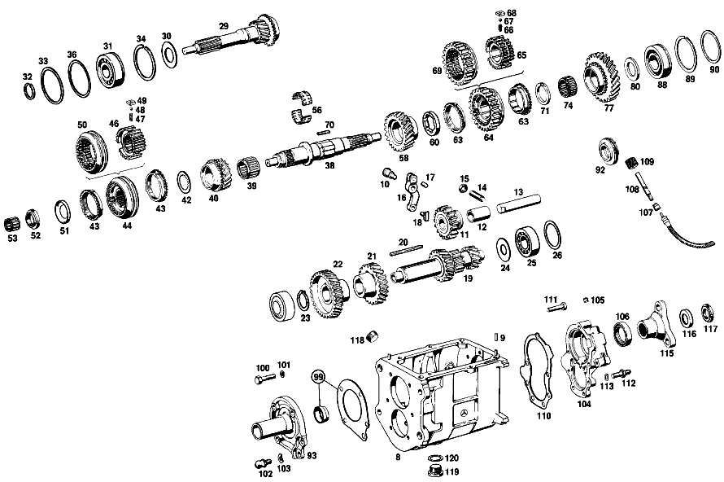

| № | Артикул | Название | Кол. | Примечание | Ограничение |
|---|---|---|---|---|---|
| 8 | A 111 260 02 11 | КОРПУС КП | 1 | Рулевое управление: ВлевоКоробка передач [001] 016 UP TO CHASSIS 001858 EXCEPT FOR, SEE FOOTNOTE 8 [008] 001473, 001548, 001702, 001722, 001786, 001797, 001801, 001804, 001853- 001857. | |
| 9 | N 000007 006205 | - Цилиндрический штифт | 2 | Рулевое управление: ВлевоКоробка передач [001] 016 UP TO CHASSIS 001858 EXCEPT FOR, SEE FOOTNOTE 8 [008] 001473, 001548, 001702, 001722, 001786, 001797, 001801, 001804, 001853- 001857. | |
| 10 | A 111 262 00 74 | - Палец | 1 | Рулевое управление: ВлевоКоробка передач [001] 016 UP TO CHASSIS 001858 EXCEPT FOR, SEE FOOTNOTE 8 [008] 001473, 001548, 001702, 001722, 001786, 001797, 001801, 001804, 001853- 001857. | |
| 11 | A 120 260 03 25 | Шестерня заднего хода | 1 | Рулевое управление: ВлевоКоробка передач [001] 016 UP TO CHASSIS 001858 EXCEPT FOR, SEE FOOTNOTE 8 [008] 001473, 001548, 001702, 001722, 001786, 001797, 001801, 001804, 001853- 001857. | |
| 12 | A 120 263 03 50 | - втулка | 1 | Рулевое управление: ВлевоКоробка передач [001] 016 UP TO CHASSIS 001858 EXCEPT FOR, SEE FOOTNOTE 8 [008] 001473, 001548, 001702, 001722, 001786, 001797, 001801, 001804, 001853- 001857. | |
| 13 | A 186 263 00 30 | Ось шестерни заднего хода | 1 | Рулевое управление: ВлевоКоробка передач [001] 016 UP TO CHASSIS 001858 EXCEPT FOR, SEE FOOTNOTE 8 [008] 001473, 001548, 001702, 001722, 001786, 001797, 001801, 001804, 001853- 001857. | |
| 14 | N 000417 010006 | РЕЗЬБОВОЙ ШТИФТ | 1 | Рулевое управление: ВлевоКоробка передач [001] 016 UP TO CHASSIS 001858 EXCEPT FOR, SEE FOOTNOTE 8 [008] 001473, 001548, 001702, 001722, 001786, 001797, 001801, 001804, 001853- 001857. | |
| 15 | N 000934 010009 | Гайка | - | Рулевое управление: ВлевоКоробка передач | |
| 15 | N 304032 010002 | Шестигранная гайка | 1 | M10 Рулевое управление: ВлевоКоробка передач [001] 016 UP TO CHASSIS 001858 EXCEPT FOR, SEE FOOTNOTE 8 [008] 001473, 001548, 001702, 001722, 001786, 001797, 001801, 001804, 001853- 001857. | |
| 16 | A 136 260 00 37 | РЫЧАГ | 1 | Рулевое управление: ВлевоКоробка передач [001] 016 UP TO CHASSIS 001858 EXCEPT FOR, SEE FOOTNOTE 8 [008] 001473, 001548, 001702, 001722, 001786, 001797, 001801, 001804, 001853- 001857. | |
| 17 | N 900037 008104 | - Установочный штифт | 1 | Рулевое управление: ВлевоКоробка передач [001] 016 UP TO CHASSIS 001858 EXCEPT FOR, SEE FOOTNOTE 8 [008] 001473, 001548, 001702, 001722, 001786, 001797, 001801, 001804, 001853- 001857. | |
| 18 | A 121 263 01 23 | Скользящая муфта | 1 | Рулевое управление: ВлевоКоробка передач [001] 016 UP TO CHASSIS 001858 EXCEPT FOR, SEE FOOTNOTE 8 [008] 001473, 001548, 001702, 001722, 001786, 001797, 001801, 001804, 001853- 001857. | |
| 19 | A 111 263 05 02 | ПРОМЕЖУТОЧНЫЙ ВАЛ | 1 | Рулевое управление: ВлевоКоробка передач [004] FROM TRANSMISSION 000468 | |
| 20 | A 186 991 03 68 | Призматическая шпонка | 1 | Рулевое управление: ВлевоКоробка передач [001] 016 UP TO CHASSIS 001858 EXCEPT FOR, SEE FOOTNOTE 8 [008] 001473, 001548, 001702, 001722, 001786, 001797, 001801, 001804, 001853- 001857. | |
| 21 | A 111 263 00 13 | Шестерня | 1 | ТРЕТЬЯ ПЕРЕДАЧА Рулевое управление: ВлевоКоробка передач [001] 016 UP TO CHASSIS 001858 EXCEPT FOR, SEE FOOTNOTE 8 [008] 001473, 001548, 001702, 001722, 001786, 001797, 001801, 001804, 001853- 001857. | |
| 22 | A 111 263 00 10 | Шестерня | 1 | ЧЕТВЁРТАЯ ПЕРЕДАЧА Рулевое управление: ВлевоКоробка передач [001] 016 UP TO CHASSIS 001858 EXCEPT FOR, SEE FOOTNOTE 8 [008] 001473, 001548, 001702, 001722, 001786, 001797, 001801, 001804, 001853- 001857. | |
| 23 | N 900055 035300 | Стопорное кольцо | 1 | Рулевое управление: ВлевоКоробка передач [402] БОЛЬШЕ НЕ ПОСТАВЛЯЕТСЯ [001] 016 UP TO CHASSIS 001858 EXCEPT FOR, SEE FOOTNOTE 8 [008] 001473, 001548, 001702, 001722, 001786, 001797, 001801, 001804, 001853- 001857. | |
| 24 | A 186 990 18 40 | Диск | 1 | Рулевое управление: ВлевоКоробка передач [001] 016 UP TO CHASSIS 001858 EXCEPT FOR, SEE FOOTNOTE 8 [008] 001473, 001548, 001702, 001722, 001786, 001797, 001801, 001804, 001853- 001857. | |
| 25 | A 001 981 71 25 | ШАРИКОПОДШИПНИК | - | Рулевое управление: ВлевоКоробка передач | |
| 25 | A 004 981 42 01 | Подшипник с цил. роликами | 2 | Рулевое управление: ВлевоКоробка передач | |
| 26 | A 120 263 08 52 | Компенсационная шайба | NB | ПО НЕОБХОДИМОСТИ 1.0 MM Рулевое управление: ВлевоКоробка передач [001] 016 UP TO CHASSIS 001858 EXCEPT FOR, SEE FOOTNOTE 8 [008] 001473, 001548, 001702, 001722, 001786, 001797, 001801, 001804, 001853- 001857. | |
| 29 | A 111 260 13 20 | Приводной вал | 1 | Рулевое управление: ВлевоКоробка передач [001] 016 UP TO CHASSIS 001858 EXCEPT FOR, SEE FOOTNOTE 8 [008] 001473, 001548, 001702, 001722, 001786, 001797, 001801, 001804, 001853- 001857. | |
| 30 | A 186 262 00 66 | Маслозащитное кольцо | 1 | Рулевое управление: ВлевоКоробка передач [001] 016 UP TO CHASSIS 001858 EXCEPT FOR, SEE FOOTNOTE 8 [008] 001473, 001548, 001702, 001722, 001786, 001797, 001801, 001804, 001853- 001857. | |
| 31 | A 002 981 06 25 | ШАРИКОПОДШИПНИК | 1 | Рулевое управление: ВлевоКоробка передач | |
| 32 | A 123 262 04 94 | Пруж. стопорное кольцо | 1 | Рулевое управление: ВлевоКоробка передач [001] 016 UP TO CHASSIS 001858 EXCEPT FOR, SEE FOOTNOTE 8 [008] 001473, 001548, 001702, 001722, 001786, 001797, 001801, 001804, 001853- 001857. | |
| 33 | A 186 262 04 51 | Проставочное кольцо | 1 | Рулевое управление: ВлевоКоробка передач [001] 016 UP TO CHASSIS 001858 EXCEPT FOR, SEE FOOTNOTE 8 [008] 001473, 001548, 001702, 001722, 001786, 001797, 001801, 001804, 001853- 001857. | |
| 34 | A 136 994 06 35 | Пруж. стопорное кольцо | 1 | ПО НЕОБХОДИМОСТИ 1.9 MM Рулевое управление: ВлевоКоробка передач [001] 016 UP TO CHASSIS 001858 EXCEPT FOR, SEE FOOTNOTE 8 [008] 001473, 001548, 001702, 001722, 001786, 001797, 001801, 001804, 001853- 001857. | |
| 36 | A 136 262 06 52 | Компенсационная шайба | 1 | ПО НЕОБХОДИМОСТИ 0.1 MM Рулевое управление: ВлевоКоробка передач [001] 016 UP TO CHASSIS 001858 EXCEPT FOR, SEE FOOTNOTE 8 [008] 001473, 001548, 001702, 001722, 001786, 001797, 001801, 001804, 001853- 001857. | |
| 38 | A 180 262 01 05 | Вторичный вал | 1 | Рулевое управление: ВлевоКоробка передач [001] 016 UP TO CHASSIS 001858 EXCEPT FOR, SEE FOOTNOTE 8 [008] 001473, 001548, 001702, 001722, 001786, 001797, 001801, 001804, 001853- 001857. | |
| 39 | A 001 981 68 10 | ПОДШИПНИК ИГОЛЬЧАТЫЙ | 1 | Рулевое управление: ВлевоКоробка передач [001] 016 UP TO CHASSIS 001858 EXCEPT FOR, SEE FOOTNOTE 8 [008] 001473, 001548, 001702, 001722, 001786, 001797, 001801, 001804, 001853- 001857. | |
| 40 | A 111 260 03 44 | Цил. косозубая шестерня | 1 | Рулевое управление: ВлевоКоробка передач | |
| 42 | A 120 262 23 62 | Упорная шайба | 1 | ТРЕТЬЯ ПЕРЕДАЧА Рулевое управление: ВлевоКоробка передач [001] 016 UP TO CHASSIS 001858 EXCEPT FOR, SEE FOOTNOTE 8 [008] 001473, 001548, 001702, 001722, 001786, 001797, 001801, 001804, 001853- 001857. | |
| 43 | A 113 262 00 34 | Кольцо синхронизатора | 1 | ТРЕТЬЯ И ЧЕТВЁРТАЯ ПЕРЕДАЧА Рулевое управление: ВлевоКоробка передач [001] 016 UP TO CHASSIS 001858 EXCEPT FOR, SEE FOOTNOTE 8 [008] 001473, 001548, 001702, 001722, 001786, 001797, 001801, 001804, 001853- 001857. | |
| 44 | A 111 260 08 45 | Корпус синхронизатора | 1 | ТРЕТЬЯ И ЧЕТВЁРТАЯ ПЕРЕДАЧА Рулевое управление: ВлевоКоробка передач | |
| 46 | A 111 262 04 35 | - Корпус синхронизатора | - | Рулевое управление: ВлевоКоробка передач [417] БОЛЬШЕ НЕ ПОСТАВЛЯЕТСЯ, ЗАКАЗЫВАТЬ КОМПЛЕКТ ПОСТАВКИ [005] UP TO CHASSIS 000354 [015] НЕ ИСПОЛЬЗУЕТСЯ | |
| 47 | A 180 993 41 01 | - пружина | 3 | Рулевое управление: ВлевоКоробка передач [001] 016 UP TO CHASSIS 001858 EXCEPT FOR, SEE FOOTNOTE 8 [008] 001473, 001548, 001702, 001722, 001786, 001797, 001801, 001804, 001853- 001857. | |
| 48 | N 005401 306500 | - Шар | 3 | 6.5mm Рулевое управление: ВлевоКоробка передач [001] 016 UP TO CHASSIS 001858 EXCEPT FOR, SEE FOOTNOTE 8 [008] 001473, 001548, 001702, 001722, 001786, 001797, 001801, 001804, 001853- 001857. | |
| 49 | A 121 262 00 40 | - Поводок | 3 | Рулевое управление: ВлевоКоробка передач [001] 016 UP TO CHASSIS 001858 EXCEPT FOR, SEE FOOTNOTE 8 [008] 001473, 001548, 001702, 001722, 001786, 001797, 001801, 001804, 001853- 001857. | |
| 50 | A 111 262 04 23 | - СКОЛЬЗ. МУФТА СИНХРОНИЗ. | - | Рулевое управление: ВлевоКоробка передач [005] UP TO CHASSIS 000354 [015] НЕ ИСПОЛЬЗУЕТСЯ | |
| 51 | A 120 994 01 15 | Стопорная шайба | 1 | Рулевое управление: ВлевоКоробка передач [001] 016 UP TO CHASSIS 001858 EXCEPT FOR, SEE FOOTNOTE 8 [008] 001473, 001548, 001702, 001722, 001786, 001797, 001801, 001804, 001853- 001857. | |
| 52 | A 120 262 03 26 | Шлицевая гайка | 1 | Рулевое управление: ВлевоКоробка передач [001] 016 UP TO CHASSIS 001858 EXCEPT FOR, SEE FOOTNOTE 8 [008] 001473, 001548, 001702, 001722, 001786, 001797, 001801, 001804, 001853- 001857. | |
| 53 | A 000 981 63 12 | СЕПАРАТОР ИГОЛЬЧ. ПОДШ. | - | Рулевое управление: ВлевоКоробка передач | |
| 53 | A 002 981 34 12 | Сепаратор роликоподш. | 1 | Рулевое управление: ВлевоКоробка передач [001] 016 UP TO CHASSIS 001858 EXCEPT FOR, SEE FOOTNOTE 8 [008] 001473, 001548, 001702, 001722, 001786, 001797, 001801, 001804, 001853- 001857. | |
| 56 | A 120 981 03 12 | Сепаратор роликоподш. | 1 | Рулевое управление: ВлевоКоробка передач [001] 016 UP TO CHASSIS 001858 EXCEPT FOR, SEE FOOTNOTE 8 [008] 001473, 001548, 001702, 001722, 001786, 001797, 001801, 001804, 001853- 001857. | |
| 58 | A 110 260 01 19 | Цил. косозубая шестерня | 1 | Рулевое управление: ВлевоКоробка передач [001] 016 UP TO CHASSIS 001858 EXCEPT FOR, SEE FOOTNOTE 8 [008] 001473, 001548, 001702, 001722, 001786, 001797, 001801, 001804, 001853- 001857. | |
| 60 | A 120 262 16 62 | ШАЙБА УПОРНАЯ | 1 | ПО НЕОБХОДИМОСТИ 7.9 MM Рулевое управление: ВлевоКоробка передач [001] 016 UP TO CHASSIS 001858 EXCEPT FOR, SEE FOOTNOTE 8 [008] 001473, 001548, 001702, 001722, 001786, 001797, 001801, 001804, 001853- 001857. | |
| 60 | A 120 262 18 62 | ШАЙБА УПОРНАЯ | 1 | ПО НЕОБХОДИМОСТИ 8.0 MM Рулевое управление: ВлевоКоробка передач [001] 016 UP TO CHASSIS 001858 EXCEPT FOR, SEE FOOTNOTE 8 [008] 001473, 001548, 001702, 001722, 001786, 001797, 001801, 001804, 001853- 001857. | |
| 60 | A 120 262 20 62 | Упорная шайба | 1 | ПО НЕОБХОДИМОСТИ 8.10 MM Рулевое управление: ВлевоКоробка передач [001] 016 UP TO CHASSIS 001858 EXCEPT FOR, SEE FOOTNOTE 8 [008] 001473, 001548, 001702, 001722, 001786, 001797, 001801, 001804, 001853- 001857. | |
| 63 | A 113 262 00 34 | Кольцо синхронизатора | 2 | ПЕРВАЯ И ВТОРАЯ ПЕРЕДАЧА Рулевое управление: ВлевоКоробка передач [001] 016 UP TO CHASSIS 001858 EXCEPT FOR, SEE FOOTNOTE 8 [008] 001473, 001548, 001702, 001722, 001786, 001797, 001801, 001804, 001853- 001857. | |
| 64 | A 111 260 09 45 | Корпус синхронизатора | 1 | ПЕРВАЯ И ВТОРАЯ ПЕРЕДАЧА Рулевое управление: ВлевоКоробка передач [001] 016 UP TO CHASSIS 001858 EXCEPT FOR, SEE FOOTNOTE 8 [008] 001473, 001548, 001702, 001722, 001786, 001797, 001801, 001804, 001853- 001857. | |
| 65 | A 111 262 06 35 | - СИНХРОНИЗАТОР | - | Рулевое управление: ВлевоКоробка передач [402] БОЛЬШЕ НЕ ПОСТАВЛЯЕТСЯ [015] НЕ ИСПОЛЬЗУЕТСЯ | |
| 66 | A 180 993 41 01 | - пружина | 3 | Рулевое управление: ВлевоКоробка передач [001] 016 UP TO CHASSIS 001858 EXCEPT FOR, SEE FOOTNOTE 8 [008] 001473, 001548, 001702, 001722, 001786, 001797, 001801, 001804, 001853- 001857. | |
| 67 | N 005401 306500 | - Шар | 3 | 6.5mm Рулевое управление: ВлевоКоробка передач [001] 016 UP TO CHASSIS 001858 EXCEPT FOR, SEE FOOTNOTE 8 [008] 001473, 001548, 001702, 001722, 001786, 001797, 001801, 001804, 001853- 001857. | |
| 68 | A 121 262 00 40 | - Поводок | 3 | Рулевое управление: ВлевоКоробка передач [001] 016 UP TO CHASSIS 001858 EXCEPT FOR, SEE FOOTNOTE 8 [008] 001473, 001548, 001702, 001722, 001786, 001797, 001801, 001804, 001853- 001857. | |
| 69 | A 111 262 06 23 | - СКОЛЬЗ. МУФТА СИНХРОНИЗ. | - | Рулевое управление: ВлевоКоробка передач [402] БОЛЬШЕ НЕ ПОСТАВЛЯЕТСЯ [001] 016 UP TO CHASSIS 001858 EXCEPT FOR, SEE FOOTNOTE 8 [008] 001473, 001548, 001702, 001722, 001786, 001797, 001801, 001804, 001853- 001857. [015] НЕ ИСПОЛЬЗУЕТСЯ | |
| 70 | A 120 262 00 81 | Вставной клин | 1 | ПЕРВАЯ И ВТОРАЯ ПЕРЕДАЧА Рулевое управление: ВлевоКоробка передач [001] 016 UP TO CHASSIS 001858 EXCEPT FOR, SEE FOOTNOTE 8 [008] 001473, 001548, 001702, 001722, 001786, 001797, 001801, 001804, 001853- 001857. | |
| 71 | A 120 262 11 62 | Упорная шайба | NB | 4.40 MM Рулевое управление: ВлевоКоробка передач [001] 016 UP TO CHASSIS 001858 EXCEPT FOR, SEE FOOTNOTE 8 [008] 001473, 001548, 001702, 001722, 001786, 001797, 001801, 001804, 001853- 001857. | |
| 74 | A 001 981 69 10 | Игольчатый подшипник | 1 | Рулевое управление: ВлевоКоробка передач [001] 016 UP TO CHASSIS 001858 EXCEPT FOR, SEE FOOTNOTE 8 [008] 001473, 001548, 001702, 001722, 001786, 001797, 001801, 001804, 001853- 001857. | |
| 77 | A 110 260 00 19 | Цил. косозубая шестерня | 1 | ПЕРВАЯ ПЕРЕДАЧА Рулевое управление: ВлевоКоробка передач [004] FROM TRANSMISSION 000468 | |
| 80 | A 186 262 01 62 | Упорная шайба | NB | ПО НЕОБХОДИМОСТИ 3.80 MM Рулевое управление: ВлевоКоробка передач [001] 016 UP TO CHASSIS 001858 EXCEPT FOR, SEE FOOTNOTE 8 [008] 001473, 001548, 001702, 001722, 001786, 001797, 001801, 001804, 001853- 001857. | |
| 88 | A 002 981 07 25 | Рад. шарикоподшипник | 1 | Рулевое управление: ВлевоКоробка передач | |
| 89 | A 000 994 16 40 | СТОПОРН. КОЛЬЦО | 1 | Рулевое управление: ВлевоКоробка передач [001] 016 UP TO CHASSIS 001858 EXCEPT FOR, SEE FOOTNOTE 8 [008] 001473, 001548, 001702, 001722, 001786, 001797, 001801, 001804, 001853- 001857. | |
| 90 | A 136 262 04 52 | Компенсационная шайба | NB | ПО НЕОБХОДИМОСТИ 0.1 MM Рулевое управление: ВлевоКоробка передач [001] 016 UP TO CHASSIS 001858 EXCEPT FOR, SEE FOOTNOTE 8 [008] 001473, 001548, 001702, 001722, 001786, 001797, 001801, 001804, 001853- 001857. | |
| 92 | A 110 264 00 30 | Ведущее колесо | 1 | ПРИВОД СПИДОМЕТРА Рулевое управление: ВлевоКоробка передач [001] 016 UP TO CHASSIS 001858 EXCEPT FOR, SEE FOOTNOTE 8 [008] 001473, 001548, 001702, 001722, 001786, 001797, 001801, 001804, 001853- 001857. | |
| 93 | A 112 260 04 21 | КРЫШКА КОРПУСА | 1 | СПЕРЕДИ Рулевое управление: ВлевоКоробка передач | |
| 99 | A 112 586 01 26 | РЕМКОМПЛЕКТ | - | Рулевое управление: ВлевоКоробка передач | |
| 99 | A 111 586 01 26 | РЕМКОМПЛЕКТ | 1 | Рулевое управление: ВлевоКоробка передач [001] 016 UP TO CHASSIS 001858 EXCEPT FOR, SEE FOOTNOTE 8 [008] 001473, 001548, 001702, 001722, 001786, 001797, 001801, 001804, 001853- 001857. | |
| 100 | N 000931 008046 | Винт | - | Рулевое управление: ВлевоКоробка передач | |
| 100 | N 304017 008018 | Винт с 6-гранной головкой | 3 | TRANSMISSION CASE FRONT COVER TO TRANSMISSION CASE; M8X35 Рулевое управление: ВлевоКоробка передач [001] 016 UP TO CHASSIS 001858 EXCEPT FOR, SEE FOOTNOTE 8 [008] 001473, 001548, 001702, 001722, 001786, 001797, 001801, 001804, 001853- 001857. | |
| 101 | N 000137 008204 | Пружинная шайба | 4 | TRANSMISSION CASE FRONT COVER TO TRANSMISSION CASE Рулевое управление: ВлевоКоробка передач [001] 016 UP TO CHASSIS 001858 EXCEPT FOR, SEE FOOTNOTE 8 [008] 001473, 001548, 001702, 001722, 001786, 001797, 001801, 001804, 001853- 001857. | |
| 102 | A 112 991 01 15 | ЦАПФА СФЕРИЧЕСКАЯ | 1 | TRANSMISSION CASE FRONT COVER TO TRANSMISSION CASE Рулевое управление: ВлевоКоробка передач | |
| 103 | N 000137 010201 | Пружинная шайба | 1 | TRANSMISSION CASE FRONT COVER TO TRANSMISSION CASE Рулевое управление: ВлевоКоробка передач [001] 016 UP TO CHASSIS 001858 EXCEPT FOR, SEE FOOTNOTE 8 [008] 001473, 001548, 001702, 001722, 001786, 001797, 001801, 001804, 001853- 001857. | |
| 104 | A 111 260 04 16 | Крышка корпуса | 1 | СЗАДИ Рулевое управление: ВлевоКоробка передач [001] 016 UP TO CHASSIS 001858 EXCEPT FOR, SEE FOOTNOTE 8 [008] 001473, 001548, 001702, 001722, 001786, 001797, 001801, 001804, 001853- 001857. | |
| 105 | A 153 264 00 55 | - Пробка | 1 | Рулевое управление: ВлевоКоробка передач [001] 016 UP TO CHASSIS 001858 EXCEPT FOR, SEE FOOTNOTE 8 [008] 001473, 001548, 001702, 001722, 001786, 001797, 001801, 001804, 001853- 001857. | |
| 106 | A 000 997 17 46 | УПЛОТНИТ. КОЛЬЦО | 1 | Рулевое управление: ВлевоКоробка передач [001] 016 UP TO CHASSIS 001858 EXCEPT FOR, SEE FOOTNOTE 8 [008] 001473, 001548, 001702, 001722, 001786, 001797, 001801, 001804, 001853- 001857. | |
| 107 | A 115 274 00 60 | УПЛОТНИТ. КОЛЬЦО | 1 | Рулевое управление: ВлевоКоробка передач [402] БОЛЬШЕ НЕ ПОСТАВЛЯЕТСЯ [001] 016 UP TO CHASSIS 001858 EXCEPT FOR, SEE FOOTNOTE 8 [008] 001473, 001548, 001702, 001722, 001786, 001797, 001801, 001804, 001853- 001857. | |
| 108 | A 111 264 00 32 | Вал | 1 | Рулевое управление: ВлевоКоробка передач [001] 016 UP TO CHASSIS 001858 EXCEPT FOR, SEE FOOTNOTE 8 [008] 001473, 001548, 001702, 001722, 001786, 001797, 001801, 001804, 001853- 001857. | |
| 109 | A 120 264 02 31 | Ведущее колесо | 1 | Рулевое управление: ВлевоКоробка передач [001] 016 UP TO CHASSIS 001858 EXCEPT FOR, SEE FOOTNOTE 8 [008] 001473, 001548, 001702, 001722, 001786, 001797, 001801, 001804, 001853- 001857. | |
| 110 | A 111 261 00 79 | Уплотнительная прокладка | 1 | Рулевое управление: ВлевоКоробка передач [001] 016 UP TO CHASSIS 001858 EXCEPT FOR, SEE FOOTNOTE 8 [008] 001473, 001548, 001702, 001722, 001786, 001797, 001801, 001804, 001853- 001857. | |
| 111 | N 000931 008046 | Винт | - | Рулевое управление: ВлевоКоробка передач | |
| 111 | N 304017 008018 | Винт с 6-гранной головкой | 1 | M8X35 Рулевое управление: ВлевоКоробка передач [001] 016 UP TO CHASSIS 001858 EXCEPT FOR, SEE FOOTNOTE 8 [008] 001473, 001548, 001702, 001722, 001786, 001797, 001801, 001804, 001853- 001857. | |
| 112 | A 110 990 00 10 | БОЛТ | 1 | Рулевое управление: ВлевоКоробка передач [001] 016 UP TO CHASSIS 001858 EXCEPT FOR, SEE FOOTNOTE 8 [008] 001473, 001548, 001702, 001722, 001786, 001797, 001801, 001804, 001853- 001857. | |
| 113 | N 000137 008204 | Пружинная шайба | 1 | Рулевое управление: ВлевоКоробка передач [001] 016 UP TO CHASSIS 001858 EXCEPT FOR, SEE FOOTNOTE 8 [008] 001473, 001548, 001702, 001722, 001786, 001797, 001801, 001804, 001853- 001857. | |
| 115 | A 111 262 00 45 | Фланец | 1 | Рулевое управление: ВлевоКоробка передач [001] 016 UP TO CHASSIS 001858 EXCEPT FOR, SEE FOOTNOTE 8 [008] 001473, 001548, 001702, 001722, 001786, 001797, 001801, 001804, 001853- 001857. | |
| 116 | A 186 262 01 73 | предохранитель | 1 | Рулевое управление: ВлевоКоробка передач [001] 016 UP TO CHASSIS 001858 EXCEPT FOR, SEE FOOTNOTE 8 [008] 001473, 001548, 001702, 001722, 001786, 001797, 001801, 001804, 001853- 001857. | |
| 117 | A 186 262 02 26 | Шлицевая гайка | 1 | Рулевое управление: ВлевоКоробка передач [001] 016 UP TO CHASSIS 001858 EXCEPT FOR, SEE FOOTNOTE 8 [008] 001473, 001548, 001702, 001722, 001786, 001797, 001801, 001804, 001853- 001857. | |
| 118 | A 186 997 00 32 | ЗАГЛУШКА РЕЗЬБОВАЯ | 1 | M24X1,5 Рулевое управление: ВлевоКоробка передач [001] 016 UP TO CHASSIS 001858 EXCEPT FOR, SEE FOOTNOTE 8 [008] 001473, 001548, 001702, 001722, 001786, 001797, 001801, 001804, 001853- 001857. | |
| 119 | A 094 997 24 00 | Резьбовая пробка | - | Рулевое управление: ВлевоКоробка передач | |
| 119 | A 210 997 01 32 | Резьбовая пробка | 1 | Рулевое управление: ВлевоКоробка передач | |
| 120 | N 007603 024100 | УПЛОТНИТ. КОЛЬЦО | 1 | Рулевое управление: ВлевоКоробка передач [001] 016 UP TO CHASSIS 001858 EXCEPT FOR, SEE FOOTNOTE 8 [008] 001473, 001548, 001702, 001722, 001786, 001797, 001801, 001804, 001853- 001857. | |
| 137 | N 000939 010012 | - Винт | 6 | Рулевое управление: ВлевоКоробка передач | |
| 272 | A 111 260 32 14 | КРЫШКА КОРПУСА | 1 | TOP, с SELECTOR LEVER Рулевое управление: ВлевоКоробка передач [001] 016 UP TO CHASSIS 001858 EXCEPT FOR, SEE FOOTNOTE 8 [008] 001473, 001548, 001702, 001722, 001786, 001797, 001801, 001804, 001853- 001857. | |
| 273 | A 111 260 31 14 | - КРЫШКА КОРПУСА | 1 | СВЕРХУ Рулевое управление: ВлевоКоробка передач [010] FROM TRANSMISSION 001325 | |
| 274 | A 153 992 00 05 | - втулка | 1 | Рулевое управление: ВлевоКоробка передач [001] 016 UP TO CHASSIS 001858 EXCEPT FOR, SEE FOOTNOTE 8 [008] 001473, 001548, 001702, 001722, 001786, 001797, 001801, 001804, 001853- 001857. | |
| 275 | A 136 265 00 48 | - Запор | 1 | Рулевое управление: ВлевоКоробка передач [001] 016 UP TO CHASSIS 001858 EXCEPT FOR, SEE FOOTNOTE 8 [008] 001473, 001548, 001702, 001722, 001786, 001797, 001801, 001804, 001853- 001857. | |
| 276 | A 180 993 26 01 | - пружина | 1 | Рулевое управление: ВлевоКоробка передач [001] 016 UP TO CHASSIS 001858 EXCEPT FOR, SEE FOOTNOTE 8 [008] 001473, 001548, 001702, 001722, 001786, 001797, 001801, 001804, 001853- 001857. | |
| 277 | A 094 990 92 07 | - Уплотнительное кольцо | 1 | Рулевое управление: ВлевоКоробка передач [001] 016 UP TO CHASSIS 001858 EXCEPT FOR, SEE FOOTNOTE 8 [008] 001473, 001548, 001702, 001722, 001786, 001797, 001801, 001804, 001853- 001857. | |
| 278 | A 136 997 08 30 | - Резьбовая пробка | 1 | Рулевое управление: ВлевоКоробка передач [001] 016 UP TO CHASSIS 001858 EXCEPT FOR, SEE FOOTNOTE 8 [008] 001473, 001548, 001702, 001722, 001786, 001797, 001801, 001804, 001853- 001857. | |
| 279 | A 136 265 02 47 | - Палец | 2 | Рулевое управление: ВлевоКоробка передач [001] 016 UP TO CHASSIS 001858 EXCEPT FOR, SEE FOOTNOTE 8 [008] 001473, 001548, 001702, 001722, 001786, 001797, 001801, 001804, 001853- 001857. | |
| 280 | A 183 265 00 46 | - Фиксирующая пластина | 1 | Рулевое управление: ВлевоКоробка передач [001] 016 UP TO CHASSIS 001858 EXCEPT FOR, SEE FOOTNOTE 8 [008] 001473, 001548, 001702, 001722, 001786, 001797, 001801, 001804, 001853- 001857. | |
| 283 | A 186 268 00 07 | - ВАЛ ПЕРЕКЛЮЧЕНИЯ | - | Рулевое управление: ВлевоКоробка передач | |
| 283 | A 319 268 05 32 | - ВАЛ | 1 | ВАЛ ПЕРЕКЛЮЧЕНИЯ Рулевое управление: ВлевоКоробка передач [001] 016 UP TO CHASSIS 001858 EXCEPT FOR, SEE FOOTNOTE 8 [008] 001473, 001548, 001702, 001722, 001786, 001797, 001801, 001804, 001853- 001857. | |
| 284 | A 186 268 00 33 | - КУЛАЧОК ПЕРЕКЛЮЧЕНИЯ | 1 | ВАЛ ПЕРЕКЛЮЧЕНИЯ Рулевое управление: ВлевоКоробка передач [001] 016 UP TO CHASSIS 001858 EXCEPT FOR, SEE FOOTNOTE 8 [008] 001473, 001548, 001702, 001722, 001786, 001797, 001801, 001804, 001853- 001857. | |
| 285 | A 183 268 00 52 | - Компенсационная шайба | 1 | ВАЛ ПЕРЕКЛЮЧЕНИЯ Рулевое управление: ВлевоКоробка передач [001] 016 UP TO CHASSIS 001858 EXCEPT FOR, SEE FOOTNOTE 8 [008] 001473, 001548, 001702, 001722, 001786, 001797, 001801, 001804, 001853- 001857. | |
| 286 | A 000 981 01 10 | - Игольчатый подшипник | 2 | ВАЛ ПЕРЕКЛЮЧЕНИЯ Рулевое управление: ВлевоКоробка передач [001] 016 UP TO CHASSIS 001858 EXCEPT FOR, SEE FOOTNOTE 8 [008] 001473, 001548, 001702, 001722, 001786, 001797, 001801, 001804, 001853- 001857. | |
| 287 | A 186 997 01 20 | - ПРОБКА | 1 | ВАЛ ПЕРЕКЛЮЧЕНИЯ Рулевое управление: ВлевоКоробка передач [001] 016 UP TO CHASSIS 001858 EXCEPT FOR, SEE FOOTNOTE 8 [008] 001473, 001548, 001702, 001722, 001786, 001797, 001801, 001804, 001853- 001857. | |
| 288 | N 000472 022000 | - Стопорное кольцо | 1 | ВАЛ ПЕРЕКЛЮЧЕНИЯ Рулевое управление: ВлевоКоробка передач [001] 016 UP TO CHASSIS 001858 EXCEPT FOR, SEE FOOTNOTE 8 [008] 001473, 001548, 001702, 001722, 001786, 001797, 001801, 001804, 001853- 001857. | |
| 289 | N 006503 012100 | - Уплотнительное кольцо | 1 | ВАЛ ПЕРЕКЛЮЧЕНИЯ Рулевое управление: ВлевоКоробка передач [001] 016 UP TO CHASSIS 001858 EXCEPT FOR, SEE FOOTNOTE 8 [008] 001473, 001548, 001702, 001722, 001786, 001797, 001801, 001804, 001853- 001857. | |
| 290 | A 111 260 01 79 | - Палец выбора передач | 1 | Рулевое управление: ВлевоКоробка передач [001] 016 UP TO CHASSIS 001858 EXCEPT FOR, SEE FOOTNOTE 8 [008] 001473, 001548, 001702, 001722, 001786, 001797, 001801, 001804, 001853- 001857. | |
| 291 | A 186 997 11 40 | - Уплотнительное кольцо | 1 | Рулевое управление: ВлевоКоробка передач [001] 016 UP TO CHASSIS 001858 EXCEPT FOR, SEE FOOTNOTE 8 [008] 001473, 001548, 001702, 001722, 001786, 001797, 001801, 001804, 001853- 001857. | |
| 292 | A 110 260 01 37 | - РЫЧАГ | 1 | Рулевое управление: ВлевоКоробка передач [001] 016 UP TO CHASSIS 001858 EXCEPT FOR, SEE FOOTNOTE 8 [008] 001473, 001548, 001702, 001722, 001786, 001797, 001801, 001804, 001853- 001857. | |
| 293 | A 000 992 01 10 | - втулка | 1 | Рулевое управление: ВлевоКоробка передач [001] 016 UP TO CHASSIS 001858 EXCEPT FOR, SEE FOOTNOTE 8 [008] 001473, 001548, 001702, 001722, 001786, 001797, 001801, 001804, 001853- 001857. | |
| 296 | A 186 260 03 28 | - ПЛАСТИНА НАПРАВЛЯЮЩАЯ | 1 | Рулевое управление: ВлевоКоробка передач [001] 016 UP TO CHASSIS 001858 EXCEPT FOR, SEE FOOTNOTE 8 [008] 001473, 001548, 001702, 001722, 001786, 001797, 001801, 001804, 001853- 001857. | |
| 297 | A 136 990 82 40 | - Диск | 2 | Рулевое управление: ВлевоКоробка передач [001] 016 UP TO CHASSIS 001858 EXCEPT FOR, SEE FOOTNOTE 8 [008] 001473, 001548, 001702, 001722, 001786, 001797, 001801, 001804, 001853- 001857. | |
| 298 | A 136 265 02 72 | - гайка | 2 | Рулевое управление: ВлевоКоробка передач [001] 016 UP TO CHASSIS 001858 EXCEPT FOR, SEE FOOTNOTE 8 [008] 001473, 001548, 001702, 001722, 001786, 001797, 001801, 001804, 001853- 001857. | |
| 299 | A 186 265 00 01 | - ВИЛКА ПЕРЕКЛЮЧЕНИЯ | 1 | ПЕРВАЯ И ВТОРАЯ ПЕРЕДАЧА Рулевое управление: ВлевоКоробка передач [001] 016 UP TO CHASSIS 001858 EXCEPT FOR, SEE FOOTNOTE 8 [008] 001473, 001548, 001702, 001722, 001786, 001797, 001801, 001804, 001853- 001857. | |
| 300 | A 309 265 01 02 | - Вилка перекл.передач | 1 | ТРЕТЬЯ И ЧЕТВЁРТАЯ ПЕРЕДАЧА Рулевое управление: ВлевоКоробка передач [001] 016 UP TO CHASSIS 001858 EXCEPT FOR, SEE FOOTNOTE 8 [008] 001473, 001548, 001702, 001722, 001786, 001797, 001801, 001804, 001853- 001857. | |
| 301 | A 180 265 01 07 | - Ручка рычага перекл.пер. | 1 | ПЕРЕДАЧА ЗАДНЕГО ХОДА Рулевое управление: ВлевоКоробка передач [001] 016 UP TO CHASSIS 001858 EXCEPT FOR, SEE FOOTNOTE 8 [008] 001473, 001548, 001702, 001722, 001786, 001797, 001801, 001804, 001853- 001857. | |
| 302 | A 186 993 13 01 | - пружина | 2 | Рулевое управление: ВлевоКоробка передач [001] 016 UP TO CHASSIS 001858 EXCEPT FOR, SEE FOOTNOTE 8 [008] 001473, 001548, 001702, 001722, 001786, 001797, 001801, 001804, 001853- 001857. | |
| 303 | N 005401 308000 | - Шар | 3 | Рулевое управление: ВлевоКоробка передач [001] 016 UP TO CHASSIS 001858 EXCEPT FOR, SEE FOOTNOTE 8 [008] 001473, 001548, 001702, 001722, 001786, 001797, 001801, 001804, 001853- 001857. | |
| 304 | A 136 265 00 53 | - Проставочная трубка | 2 | НА ВИЛКЕ ПЕРЕКЛЮЧЕНИЯ ПЕРЕДАЧ Рулевое управление: ВлевоКоробка передач [001] 016 UP TO CHASSIS 001858 EXCEPT FOR, SEE FOOTNOTE 8 [008] 001473, 001548, 001702, 001722, 001786, 001797, 001801, 001804, 001853- 001857. | |
| 305 | A 136 265 01 53 | - Проставочная трубка | 1 | SHIFTING HEAD Рулевое управление: ВлевоКоробка передач [001] 016 UP TO CHASSIS 001858 EXCEPT FOR, SEE FOOTNOTE 8 [008] 001473, 001548, 001702, 001722, 001786, 001797, 001801, 001804, 001853- 001857. | |
| 306 | A 111 990 34 40 | - Диск | 3 | ПО НЕОБХОДИМОСТИ 0.3 MM Рулевое управление: ВлевоКоробка передач [001] 016 UP TO CHASSIS 001858 EXCEPT FOR, SEE FOOTNOTE 8 [008] 001473, 001548, 001702, 001722, 001786, 001797, 001801, 001804, 001853- 001857. | |
| 308 | A 136 265 04 04 | - ТЯГА ПЕРЕКЛ. ПЕРЕДАЧ | 1 | ПЕРВАЯ И ВТОРАЯ ПЕРЕДАЧА Рулевое управление: ВлевоКоробка передач [001] 016 UP TO CHASSIS 001858 EXCEPT FOR, SEE FOOTNOTE 8 [008] 001473, 001548, 001702, 001722, 001786, 001797, 001801, 001804, 001853- 001857. | |
| 309 | A 136 265 05 04 | - ТЯГА ПЕРЕКЛ. ПЕРЕДАЧ | 1 | ТРЕТЬЯ И ЧЕТВЁРТАЯ ПЕРЕДАЧА Рулевое управление: ВлевоКоробка передач [001] 016 UP TO CHASSIS 001858 EXCEPT FOR, SEE FOOTNOTE 8 [008] 001473, 001548, 001702, 001722, 001786, 001797, 001801, 001804, 001853- 001857. | |
| 310 | A 136 265 02 04 | - ТЯГА ПЕРЕКЛ. ПЕРЕДАЧ | 1 | ПЕРЕДАЧА ЗАДНЕГО ХОДА Рулевое управление: ВлевоКоробка передач [001] 016 UP TO CHASSIS 001858 EXCEPT FOR, SEE FOOTNOTE 8 [008] 001473, 001548, 001702, 001722, 001786, 001797, 001801, 001804, 001853- 001857. | |
| 311 | A 184 265 00 53 | - Проставочная трубка | 2 | Рулевое управление: ВлевоКоробка передач [001] 016 UP TO CHASSIS 001858 EXCEPT FOR, SEE FOOTNOTE 8 [008] 001473, 001548, 001702, 001722, 001786, 001797, 001801, 001804, 001853- 001857. | |
| 312 | A 136 265 00 81 | - Клин | 1 | Рулевое управление: ВлевоКоробка передач [001] 016 UP TO CHASSIS 001858 EXCEPT FOR, SEE FOOTNOTE 8 [008] 001473, 001548, 001702, 001722, 001786, 001797, 001801, 001804, 001853- 001857. | |
| 313 | A 094 260 11 00 | - Воздушный клапан | 1 | Рулевое управление: ВлевоКоробка передач [009] UP TO TRANSMISSION 001324 | |
| 315 | A 110 260 04 37 | Рычаг | 1 | ВАЛ ПЕРЕКЛЮЧЕНИЯ Рулевое управление: ВлевоКоробка передач [001] 016 UP TO CHASSIS 001858 EXCEPT FOR, SEE FOOTNOTE 8 [008] 001473, 001548, 001702, 001722, 001786, 001797, 001801, 001804, 001853- 001857. | |
| 316 | A 000 992 01 10 | - втулка | 1 | Рулевое управление: ВлевоКоробка передач [001] 016 UP TO CHASSIS 001858 EXCEPT FOR, SEE FOOTNOTE 8 [008] 001473, 001548, 001702, 001722, 001786, 001797, 001801, 001804, 001853- 001857. | |
| 319 | A 111 261 01 79 | ПРОКЛАДКА УПЛОТНИТЕЛЬНАЯ | 1 | Рулевое управление: ВлевоКоробка передач [001] 016 UP TO CHASSIS 001858 EXCEPT FOR, SEE FOOTNOTE 8 [008] 001473, 001548, 001702, 001722, 001786, 001797, 001801, 001804, 001853- 001857. | |
| 320 | N 000931 008171 | БОЛТ | 4 | Рулевое управление: ВлевоКоробка передач [001] 016 UP TO CHASSIS 001858 EXCEPT FOR, SEE FOOTNOTE 8 [008] 001473, 001548, 001702, 001722, 001786, 001797, 001801, 001804, 001853- 001857. | |
| 321 | N 000931 008217 | Винт | 2 | Рулевое управление: ВлевоКоробка передач [001] 016 UP TO CHASSIS 001858 EXCEPT FOR, SEE FOOTNOTE 8 [008] 001473, 001548, 001702, 001722, 001786, 001797, 001801, 001804, 001853- 001857. | |
| 322 | N 000137 008204 | Пружинная шайба | 2 | Рулевое управление: ВлевоКоробка передач [001] 016 UP TO CHASSIS 001858 EXCEPT FOR, SEE FOOTNOTE 8 [008] 001473, 001548, 001702, 001722, 001786, 001797, 001801, 001804, 001853- 001857. | |
| 323 | A 000 545 12 06 | Переключатель | 1 | Рулевое управление: ВлевоКоробка передач [001] 016 UP TO CHASSIS 001858 EXCEPT FOR, SEE FOOTNOTE 8 [008] 001473, 001548, 001702, 001722, 001786, 001797, 001801, 001804, 001853- 001857. | |
| 324 | A 002 545 24 28 | - ШТЕКЕР | - | Рулевое управление: ВлевоКоробка передач | |
| 324 | A 009 545 40 28 | - Сцепление, механическое | 1 | ДВОЙН.; 2\-PIN Рулевое управление: ВлевоКоробка передач [001] 016 UP TO CHASSIS 001858 EXCEPT FOR, SEE FOOTNOTE 8 [008] 001473, 001548, 001702, 001722, 001786, 001797, 001801, 001804, 001853- 001857. | |
| 325 | A 094 990 92 07 | Уплотнительное кольцо | 1 | Рулевое управление: ВлевоКоробка передач [001] 016 UP TO CHASSIS 001858 EXCEPT FOR, SEE FOOTNOTE 8 [008] 001473, 001548, 001702, 001722, 001786, 001797, 001801, 001804, 001853- 001857. | |
| 326 | A 111 546 01 43 | ДЕРЖАТЕЛЬ | 1 | Рулевое управление: ВлевоКоробка передач [001] 016 UP TO CHASSIS 001858 EXCEPT FOR, SEE FOOTNOTE 8 [008] 001473, 001548, 001702, 001722, 001786, 001797, 001801, 001804, 001853- 001857. | |
| 327 | A 094 988 15 00 | Скоба | 1 | Рулевое управление: ВлевоКоробка передач [001] 016 UP TO CHASSIS 001858 EXCEPT FOR, SEE FOOTNOTE 8 [008] 001473, 001548, 001702, 001722, 001786, 001797, 001801, 001804, 001853- 001857. | |
| 328 | A 108 260 08 82 | ТЯГА ПЕРЕКЛЮЧЕНИЯ | 1 | Рулевое управление: ВлевоКоробка передач [012] FROM CHASSIS 002131 | |
| 331 | A 111 997 12 40 | Уплотнительное кольцо | 2 | Рулевое управление: ВлевоКоробка передач [001] 016 UP TO CHASSIS 001858 EXCEPT FOR, SEE FOOTNOTE 8 [008] 001473, 001548, 001702, 001722, 001786, 001797, 001801, 001804, 001853- 001857. | |
| 332 | A 186 990 69 40 | Диск | NB | Рулевое управление: ВлевоКоробка передач [001] 016 UP TO CHASSIS 001858 EXCEPT FOR, SEE FOOTNOTE 8 [008] 001473, 001548, 001702, 001722, 001786, 001797, 001801, 001804, 001853- 001857. | |
| 333 | A 186 268 02 73 | предохранитель | 1 | Рулевое управление: ВлевоКоробка передач [001] 016 UP TO CHASSIS 001858 EXCEPT FOR, SEE FOOTNOTE 8 [008] 001473, 001548, 001702, 001722, 001786, 001797, 001801, 001804, 001853- 001857. | |
| 334 | A 186 268 02 74 | Палец | 1 | Рулевое управление: ВлевоКоробка передач [001] 016 UP TO CHASSIS 001858 EXCEPT FOR, SEE FOOTNOTE 8 [008] 001473, 001548, 001702, 001722, 001786, 001797, 001801, 001804, 001853- 001857. | |
| 335 | A 182 993 08 01 | пружина | 1 | Рулевое управление: ВлевоКоробка передач [001] 016 UP TO CHASSIS 001858 EXCEPT FOR, SEE FOOTNOTE 8 [008] 001473, 001548, 001702, 001722, 001786, 001797, 001801, 001804, 001853- 001857. | |
| 336 | A 108 268 00 97 | Манжета | 1 | Рулевое управление: ВлевоКоробка передач [012] FROM CHASSIS 002131 | |
| 338 | A 108 268 03 24 | РЫЧАГ ПЕРЕКЛЮЧЕНИЯ | 1 | Рулевое управление: ВлевоКоробка передач [012] FROM CHASSIS 002131 | |
| 339 | A 111 268 03 92 | РЕЗИНОВАЯ ПОДУШКА | 1 | Рулевое управление: ВлевоКоробка передач [001] 016 UP TO CHASSIS 001858 EXCEPT FOR, SEE FOOTNOTE 8 [008] 001473, 001548, 001702, 001722, 001786, 001797, 001801, 001804, 001853- 001857. | |
| 340 | A 180 268 00 57 | Колпачок | 1 | Рулевое управление: ВлевоКоробка передач [001] 016 UP TO CHASSIS 001858 EXCEPT FOR, SEE FOOTNOTE 8 [008] 001473, 001548, 001702, 001722, 001786, 001797, 001801, 001804, 001853- 001857. | |
| 341 | A 108 268 00 42 | Кнопка ручки рычага КП | 1 | Рулевое управление: ВлевоКоробка передач [001] 016 UP TO CHASSIS 001858 EXCEPT FOR, SEE FOOTNOTE 8 [008] 001473, 001548, 001702, 001722, 001786, 001797, 001801, 001804, 001853- 001857. | |
| 342 | A 111 260 28 94 | ОПОРА ПОДШИПНИКА | 1 | Рулевое управление: ВлевоКоробка передач [001] 016 UP TO CHASSIS 001858 EXCEPT FOR, SEE FOOTNOTE 8 [008] 001473, 001548, 001702, 001722, 001786, 001797, 001801, 001804, 001853- 001857. | |
| 343 | A 000 981 21 10 | - Игольчатый подшипник | 2 | Рулевое управление: ВлевоКоробка передач [001] 016 UP TO CHASSIS 001858 EXCEPT FOR, SEE FOOTNOTE 8 [008] 001473, 001548, 001702, 001722, 001786, 001797, 001801, 001804, 001853- 001857. | |
| 344 | A 111 260 04 15 | РЫЧАГ | 1 | Рулевое управление: ВлевоКоробка передач [001] 016 UP TO CHASSIS 001858 EXCEPT FOR, SEE FOOTNOTE 8 [008] 001473, 001548, 001702, 001722, 001786, 001797, 001801, 001804, 001853- 001857. | |
| 345 | A 111 268 10 50 | втулка | 1 | Рулевое управление: ВлевоКоробка передач [001] 016 UP TO CHASSIS 001858 EXCEPT FOR, SEE FOOTNOTE 8 [008] 001473, 001548, 001702, 001722, 001786, 001797, 001801, 001804, 001853- 001857. | |
| 346 | A 111 268 02 51 | Проставочное кольцо | 1 | Рулевое управление: ВлевоКоробка передач [001] 016 UP TO CHASSIS 001858 EXCEPT FOR, SEE FOOTNOTE 8 [008] 001473, 001548, 001702, 001722, 001786, 001797, 001801, 001804, 001853- 001857. | |
| 347 | N 000137 006204 | Пружинная шайба | 4 | Рулевое управление: ВлевоКоробка передач [001] 016 UP TO CHASSIS 001858 EXCEPT FOR, SEE FOOTNOTE 8 [008] 001473, 001548, 001702, 001722, 001786, 001797, 001801, 001804, 001853- 001857. | |
| 348 | N 000934 006007 | Гайка | 4 | Рулевое управление: ВлевоКоробка передач [001] 016 UP TO CHASSIS 001858 EXCEPT FOR, SEE FOOTNOTE 8 [008] 001473, 001548, 001702, 001722, 001786, 001797, 001801, 001804, 001853- 001857. | |
| 349 | A 111 268 07 05 | Крышка | 1 | Рулевое управление: ВлевоКоробка передач [001] 016 UP TO CHASSIS 001858 EXCEPT FOR, SEE FOOTNOTE 8 [008] 001473, 001548, 001702, 001722, 001786, 001797, 001801, 001804, 001853- 001857. | |
| 350 | A 111 260 21 81 | РЫЧАГ | - | Рулевое управление: ВлевоКоробка передач | |
| 350 | A 111 260 13 81 | РЫЧАГ | 1 | Рулевое управление: ВлевоКоробка передач [001] 016 UP TO CHASSIS 001858 EXCEPT FOR, SEE FOOTNOTE 8 [008] 001473, 001548, 001702, 001722, 001786, 001797, 001801, 001804, 001853- 001857. | |
| 351 | A 000 981 21 10 | - Игольчатый подшипник | 2 | Рулевое управление: ВлевоКоробка передач [001] 016 UP TO CHASSIS 001858 EXCEPT FOR, SEE FOOTNOTE 8 [008] 001473, 001548, 001702, 001722, 001786, 001797, 001801, 001804, 001853- 001857. | |
| 352 | A 180 997 08 40 | - УПЛОТНИТ. КОЛЬЦО | 2 | Рулевое управление: ВлевоКоробка передач [001] 016 UP TO CHASSIS 001858 EXCEPT FOR, SEE FOOTNOTE 8 [008] 001473, 001548, 001702, 001722, 001786, 001797, 001801, 001804, 001853- 001857. | |
| 353 | A 312 990 03 40 | Диск | 1 | Рулевое управление: ВлевоКоробка передач [001] 016 UP TO CHASSIS 001858 EXCEPT FOR, SEE FOOTNOTE 8 [008] 001473, 001548, 001702, 001722, 001786, 001797, 001801, 001804, 001853- 001857. | |
| 354 | N 900055 012001 | Пружинная шайба | 1 | Рулевое управление: ВлевоКоробка передач [001] 016 UP TO CHASSIS 001858 EXCEPT FOR, SEE FOOTNOTE 8 [008] 001473, 001548, 001702, 001722, 001786, 001797, 001801, 001804, 001853- 001857. | |
| 355 | N 006799 010001 | Стопорная шайба | 1 | Рулевое управление: ВлевоКоробка передач [001] 016 UP TO CHASSIS 001858 EXCEPT FOR, SEE FOOTNOTE 8 [008] 001473, 001548, 001702, 001722, 001786, 001797, 001801, 001804, 001853- 001857. | |
| 356 | N 000127 008203 | Пружинное кольцо | 2 | Рулевое управление: ВлевоКоробка передач [001] 016 UP TO CHASSIS 001858 EXCEPT FOR, SEE FOOTNOTE 8 [008] 001473, 001548, 001702, 001722, 001786, 001797, 001801, 001804, 001853- 001857. | |
| 357 | N 000934 008013 | Гайка | 2 | Рулевое управление: ВлевоКоробка передач [001] 016 UP TO CHASSIS 001858 EXCEPT FOR, SEE FOOTNOTE 8 [008] 001473, 001548, 001702, 001722, 001786, 001797, 001801, 001804, 001853- 001857. | |
| 358 | A 180 268 02 15 | РЫЧАГ | 1 | Рулевое управление: ВлевоКоробка передач [001] 016 UP TO CHASSIS 001858 EXCEPT FOR, SEE FOOTNOTE 8 [008] 001473, 001548, 001702, 001722, 001786, 001797, 001801, 001804, 001853- 001857. | |
| 359 | A 180 268 00 32 | ВАЛ | 1 | Рулевое управление: ВлевоКоробка передач [001] 016 UP TO CHASSIS 001858 EXCEPT FOR, SEE FOOTNOTE 8 [008] 001473, 001548, 001702, 001722, 001786, 001797, 001801, 001804, 001853- 001857. | |
| 360 | N 000933 006027 | БОЛТ | 1 | Рулевое управление: ВлевоКоробка передач [001] 016 UP TO CHASSIS 001858 EXCEPT FOR, SEE FOOTNOTE 8 [008] 001473, 001548, 001702, 001722, 001786, 001797, 001801, 001804, 001853- 001857. | |
| 361 | A 094 990 68 10 | Пружинное кольцо | 1 | Рулевое управление: ВлевоКоробка передач [001] 016 UP TO CHASSIS 001858 EXCEPT FOR, SEE FOOTNOTE 8 [008] 001473, 001548, 001702, 001722, 001786, 001797, 001801, 001804, 001853- 001857. | |
| 362 | A 180 997 08 40 | УПЛОТНИТ. КОЛЬЦО | 1 | Рулевое управление: ВлевоКоробка передач [001] 016 UP TO CHASSIS 001858 EXCEPT FOR, SEE FOOTNOTE 8 [008] 001473, 001548, 001702, 001722, 001786, 001797, 001801, 001804, 001853- 001857. | |
| 363 | N 900055 012001 | Пружинная шайба | 1 | Рулевое управление: ВлевоКоробка передач [001] 016 UP TO CHASSIS 001858 EXCEPT FOR, SEE FOOTNOTE 8 [008] 001473, 001548, 001702, 001722, 001786, 001797, 001801, 001804, 001853- 001857. | |
| 364 | A 180 260 02 37 | Рычаг | 1 | Рулевое управление: ВлевоКоробка передач [001] 016 UP TO CHASSIS 001858 EXCEPT FOR, SEE FOOTNOTE 8 [008] 001473, 001548, 001702, 001722, 001786, 001797, 001801, 001804, 001853- 001857. | |
| 367 | A 111 260 00 66 | Шаровой подпятник | 1 | Рулевое управление: ВлевоКоробка передач [001] 016 UP TO CHASSIS 001858 EXCEPT FOR, SEE FOOTNOTE 8 [008] 001473, 001548, 001702, 001722, 001786, 001797, 001801, 001804, 001853- 001857. | |
| 368 | N 000439 006200 | - Гайка | 1 | Рулевое управление: ВлевоКоробка передач [001] 016 UP TO CHASSIS 001858 EXCEPT FOR, SEE FOOTNOTE 8 [008] 001473, 001548, 001702, 001722, 001786, 001797, 001801, 001804, 001853- 001857. | |
| 369 | N 071805 010200 | - Шаровой подпятник | 2 | Рулевое управление: ВлевоКоробка передач [001] 016 UP TO CHASSIS 001858 EXCEPT FOR, SEE FOOTNOTE 8 [008] 001473, 001548, 001702, 001722, 001786, 001797, 001801, 001804, 001853- 001857. | |
| 370 | N 071805 010400 | Защитный кронштейн | 2 | Рулевое управление: ВлевоКоробка передач [001] 016 UP TO CHASSIS 001858 EXCEPT FOR, SEE FOOTNOTE 8 [008] 001473, 001548, 001702, 001722, 001786, 001797, 001801, 001804, 001853- 001857. | |
| 371 | A 110 260 46 33 | ТЯГА ПЕРЕКЛ. ПЕРЕДАЧ | 1 | Рулевое управление: ВлевоКоробка передач [001] 016 UP TO CHASSIS 001858 EXCEPT FOR, SEE FOOTNOTE 8 [008] 001473, 001548, 001702, 001722, 001786, 001797, 001801, 001804, 001853- 001857. | |
| 372 | A 111 260 37 33 | ТЯГА ПЕРЕКЛ. ПЕРЕДАЧ | 1 | Рулевое управление: ВлевоКоробка передач [402] БОЛЬШЕ НЕ ПОСТАВЛЯЕТСЯ | |
| 373 | N 070616 010000 | Гайка | 1 | Рулевое управление: ВлевоКоробка передач | |
| 374 | A 000 991 38 22 | Шаровой подпятник | 1 | Рулевое управление: ВлевоКоробка передач | |
| 375 | A 121 990 18 40 | ШАЙБА | 2 | Рулевое управление: ВлевоКоробка передач | |
| A 112 260 12 04 | КОРОБКА ПЕРЕДАЧ | 1 | Рулевое управление: ВлевоКоробка передач | ||
| A 111 260 00 68 | набор уплотнений | 1 | КОРОБКА ПЕРЕДАЧ Рулевое управление: ВлевоКоробка передач | ||
| A 111 263 04 02 | ПРОМЕЖУТОЧНЫЙ ВАЛ | 1 | Рулевое управление: ВлевоКоробка передач [003] UP TO TRANSMISSION 000467 | ||
| A 110 263 09 02 | Промвал коробки передач | 1 | Рулевое управление: ВлевоКоробка передач [004] FROM TRANSMISSION 000468 | ||
| A 602 263 02 52 | Дистанционная шайба | NB | ПО НЕОБХОДИМОСТИ 0.1 MM Рулевое управление: ВлевоКоробка передач [402] БОЛЬШЕ НЕ ПОСТАВЛЯЕТСЯ [001] 016 UP TO CHASSIS 001858 EXCEPT FOR, SEE FOOTNOTE 8 [008] 001473, 001548, 001702, 001722, 001786, 001797, 001801, 001804, 001853- 001857. | ||
| A 602 263 03 52 | Дистанционная шайба | NB | ПО НЕОБХОДИМОСТИ 0.25 MM Рулевое управление: ВлевоКоробка передач [001] 016 UP TO CHASSIS 001858 EXCEPT FOR, SEE FOOTNOTE 8 [008] 001473, 001548, 001702, 001722, 001786, 001797, 001801, 001804, 001853- 001857. [402] БОЛЬШЕ НЕ ПОСТАВЛЯЕТСЯ | ||
| A 602 263 04 52 | Дистанционная шайба | NB | ПО НЕОБХОДИМОСТИ 0.5mm Рулевое управление: ВлевоКоробка передач [001] 016 UP TO CHASSIS 001858 EXCEPT FOR, SEE FOOTNOTE 8 [008] 001473, 001548, 001702, 001722, 001786, 001797, 001801, 001804, 001853- 001857. | ||
| A 002 981 07 25 | Рад. шарикоподшипник | 1 | Рулевое управление: ВлевоКоробка передач | ||
| A 136 994 09 35 | Пруж. стопорное кольцо | 1 | ПО НЕОБХОДИМОСТИ 2.00 MM Рулевое управление: ВлевоКоробка передач [001] 016 UP TO CHASSIS 001858 EXCEPT FOR, SEE FOOTNOTE 8 [008] 001473, 001548, 001702, 001722, 001786, 001797, 001801, 001804, 001853- 001857. | ||
| A 136 994 07 35 | СТОПОРН. КОЛЬЦО | - | Рулевое управление: ВлевоКоробка передач | ||
| A 136 994 09 35 | Пруж. стопорное кольцо | 1 | ПО НЕОБХОДИМОСТИ 2.05 MM Рулевое управление: ВлевоКоробка передач [001] 016 UP TO CHASSIS 001858 EXCEPT FOR, SEE FOOTNOTE 8 [008] 001473, 001548, 001702, 001722, 001786, 001797, 001801, 001804, 001853- 001857. | ||
| A 136 262 07 52 | Компенсационная шайба | 1 | ПО НЕОБХОДИМОСТИ 0.2 MM Рулевое управление: ВлевоКоробка передач [001] 016 UP TO CHASSIS 001858 EXCEPT FOR, SEE FOOTNOTE 8 [008] 001473, 001548, 001702, 001722, 001786, 001797, 001801, 001804, 001853- 001857. | ||
| A 136 262 08 52 | Компенсационная шайба | 1 | ПО НЕОБХОДИМОСТИ 0.3 MM Рулевое управление: ВлевоКоробка передач [001] 016 UP TO CHASSIS 001858 EXCEPT FOR, SEE FOOTNOTE 8 [008] 001473, 001548, 001702, 001722, 001786, 001797, 001801, 001804, 001853- 001857. | ||
| A 110 260 02 19 | ШЕСТЕРНЯ | 1 | Рулевое управление: ВлевоКоробка передач [001] 016 UP TO CHASSIS 001858 EXCEPT FOR, SEE FOOTNOTE 8 [008] 001473, 001548, 001702, 001722, 001786, 001797, 001801, 001804, 001853- 001857. | ||
| N 005417 065000 | Пруж. стопорное кольцо | 1 | Рулевое управление: ВлевоКоробка передач [001] 016 UP TO CHASSIS 001858 EXCEPT FOR, SEE FOOTNOTE 8 [008] 001473, 001548, 001702, 001722, 001786, 001797, 001801, 001804, 001853- 001857. | ||
| A 120 262 13 62 | Упорная шайба | NB | 4.50 MM Рулевое управление: ВлевоКоробка передач [001] 016 UP TO CHASSIS 001858 EXCEPT FOR, SEE FOOTNOTE 8 [008] 001473, 001548, 001702, 001722, 001786, 001797, 001801, 001804, 001853- 001857. | ||
| A 120 262 15 62 | Упорная шайба | NB | 4.60 MM Рулевое управление: ВлевоКоробка передач [001] 016 UP TO CHASSIS 001858 EXCEPT FOR, SEE FOOTNOTE 8 [008] 001473, 001548, 001702, 001722, 001786, 001797, 001801, 001804, 001853- 001857. | ||
| A 113 262 01 11 | ШЕСТЕРНЯ | 1 | ПЕРВАЯ ПЕРЕДАЧА Рулевое управление: ВлевоКоробка передач [003] UP TO TRANSMISSION 000467 | ||
| N 005417 065000 | - Пруж. стопорное кольцо | 1 | Рулевое управление: ВлевоКоробка передач [004] FROM TRANSMISSION 000468 | ||
| A 186 262 02 62 | Упорная шайба | NB | ПО НЕОБХОДИМОСТИ 3.90 MM Рулевое управление: ВлевоКоробка передач [001] 016 UP TO CHASSIS 001858 EXCEPT FOR, SEE FOOTNOTE 8 [008] 001473, 001548, 001702, 001722, 001786, 001797, 001801, 001804, 001853- 001857. | ||
| A 186 262 03 62 | Упорная шайба | NB | ПО НЕОБХОДИМОСТИ 4.00 MM Рулевое управление: ВлевоКоробка передач [001] 016 UP TO CHASSIS 001858 EXCEPT FOR, SEE FOOTNOTE 8 [008] 001473, 001548, 001702, 001722, 001786, 001797, 001801, 001804, 001853- 001857. | ||
| A 186 262 04 62 | ШАЙБА УПОРНАЯ | NB | ПО НЕОБХОДИМОСТИ 4.10 MM Рулевое управление: ВлевоКоробка передач [001] 016 UP TO CHASSIS 001858 EXCEPT FOR, SEE FOOTNOTE 8 [008] 001473, 001548, 001702, 001722, 001786, 001797, 001801, 001804, 001853- 001857. | ||
| A 186 262 05 62 | Упорная шайба | NB | ПО НЕОБХОДИМОСТИ 4.20 MM Рулевое управление: ВлевоКоробка передач [001] 016 UP TO CHASSIS 001858 EXCEPT FOR, SEE FOOTNOTE 8 [008] 001473, 001548, 001702, 001722, 001786, 001797, 001801, 001804, 001853- 001857. | ||
| A 186 262 06 62 | ШАЙБА УПОРНАЯ | NB | ПО НЕОБХОДИМОСТИ 4.30 MM Рулевое управление: ВлевоКоробка передач [001] 016 UP TO CHASSIS 001858 EXCEPT FOR, SEE FOOTNOTE 8 [008] 001473, 001548, 001702, 001722, 001786, 001797, 001801, 001804, 001853- 001857. | ||
| A 186 262 07 62 | Упорная шайба | NB | ПО НЕОБХОДИМОСТИ 4.40 MM Рулевое управление: ВлевоКоробка передач [001] 016 UP TO CHASSIS 001858 EXCEPT FOR, SEE FOOTNOTE 8 [008] 001473, 001548, 001702, 001722, 001786, 001797, 001801, 001804, 001853- 001857. | ||
| A 002 981 06 25 | ШАРИКОПОДШИПНИК | 1 | Рулевое управление: ВлевоКоробка передач | ||
| A 136 262 05 52 | Компенсационная шайба | NB | ПО НЕОБХОДИМОСТИ 0.2 MM Рулевое управление: ВлевоКоробка передач [001] 016 UP TO CHASSIS 001858 EXCEPT FOR, SEE FOOTNOTE 8 [008] 001473, 001548, 001702, 001722, 001786, 001797, 001801, 001804, 001853- 001857. | ||
| A 136 262 09 52 | Компенсационная шайба | NB | ПО НЕОБХОДИМОСТИ 0.3 MM Рулевое управление: ВлевоКоробка передач [001] 016 UP TO CHASSIS 001858 EXCEPT FOR, SEE FOOTNOTE 8 [008] 001473, 001548, 001702, 001722, 001786, 001797, 001801, 001804, 001853- 001857. | ||
| A 186 261 00 60 | - Уплотнительное кольцо | 1 | Рулевое управление: ВлевоКоробка передач | ||
| A 112 261 00 79 | Уплотнительная прокладка | 1 | Рулевое управление: ВлевоКоробка передач | ||
| A 000 987 40 46 | Возвратный рычаг | 1 | TRANSMISSION CASE FRONT COVER TO TRANSMISSION CASE Рулевое управление: ВлевоКоробка передач | ||
| N 000931 008171 | БОЛТ | 1 | TRANSMISSION CASE FRONT COVER TO TRANSMISSION CASE Рулевое управление: ВлевоКоробка передач | ||
| N 000931 006083 | БОЛТ | 1 | FLEXIBLE SHAFT TO TRANSMISSION CASE REAR COVER Рулевое управление: ВлевоКоробка передач [001] 016 UP TO CHASSIS 001858 EXCEPT FOR, SEE FOOTNOTE 8 [008] 001473, 001548, 001702, 001722, 001786, 001797, 001801, 001804, 001853- 001857. | ||
| N 000137 006204 | Пружинная шайба | 1 | FLEXIBLE SHAFT TO TRANSMISSION CASE REAR COVER Рулевое управление: ВлевоКоробка передач [001] 016 UP TO CHASSIS 001858 EXCEPT FOR, SEE FOOTNOTE 8 [008] 001473, 001548, 001702, 001722, 001786, 001797, 001801, 001804, 001853- 001857. | ||
| N 000931 010093 | Винт | 2 | TRANSMISSION с CLUTCH TO CYLINDER CRANKCASE Рулевое управление: ВлевоКоробка передач [001] 016 UP TO CHASSIS 001858 EXCEPT FOR, SEE FOOTNOTE 8 [008] 001473, 001548, 001702, 001722, 001786, 001797, 001801, 001804, 001853- 001857. | ||
| N 000137 010201 | Пружинная шайба | 2 | TRANSMISSION с CLUTCH TO CYLINDER CRANKCASE Рулевое управление: ВлевоКоробка передач [001] 016 UP TO CHASSIS 001858 EXCEPT FOR, SEE FOOTNOTE 8 [008] 001473, 001548, 001702, 001722, 001786, 001797, 001801, 001804, 001853- 001857. | ||
| N 000931 010093 | Винт | 1 | TRANSMISSION с CLUTCH TO INTERMEDIATE FLANGE Рулевое управление: ВлевоКоробка передач [001] 016 UP TO CHASSIS 001858 EXCEPT FOR, SEE FOOTNOTE 8 [008] 001473, 001548, 001702, 001722, 001786, 001797, 001801, 001804, 001853- 001857. | ||
| N 000125 010504 | ШАЙБА | 1 | TRANSMISSION с CLUTCH TO INTERMEDIATE FLANGE Рулевое управление: ВлевоКоробка передач [001] 016 UP TO CHASSIS 001858 EXCEPT FOR, SEE FOOTNOTE 8 [008] 001473, 001548, 001702, 001722, 001786, 001797, 001801, 001804, 001853- 001857. | ||
| N 000912 010022 | БОЛТ | 2 | Рулевое управление: ВлевоКоробка передач [001] 016 UP TO CHASSIS 001858 EXCEPT FOR, SEE FOOTNOTE 8 [008] 001473, 001548, 001702, 001722, 001786, 001797, 001801, 001804, 001853- 001857. | ||
| N 000137 010201 | Пружинная шайба | 2 | Рулевое управление: ВлевоКоробка передач [001] 016 UP TO CHASSIS 001858 EXCEPT FOR, SEE FOOTNOTE 8 [008] 001473, 001548, 001702, 001722, 001786, 001797, 001801, 001804, 001853- 001857. | ||
| N 000934 010009 | Гайка | - | Рулевое управление: ВлевоКоробка передач | ||
| N 304032 010002 | Шестигранная гайка | 2 | M10 Рулевое управление: ВлевоКоробка передач [001] 016 UP TO CHASSIS 001858 EXCEPT FOR, SEE FOOTNOTE 8 [008] 001473, 001548, 001702, 001722, 001786, 001797, 001801, 001804, 001853- 001857. | ||
| A 111 260 23 14 | - КРЫШКА КОРПУСА | - | Рулевое управление: ВлевоКоробка передач [009] UP TO TRANSMISSION 001324 | ||
| N 000933 006130 | - Винт | 2 | DETENT PLATE TO TRANSMISSION CASE TOP COVER Рулевое управление: ВлевоКоробка передач [001] 016 UP TO CHASSIS 001858 EXCEPT FOR, SEE FOOTNOTE 8 [008] 001473, 001548, 001702, 001722, 001786, 001797, 001801, 001804, 001853- 001857. | ||
| N 000137 006204 | - Пружинная шайба | 2 | DETENT PLATE TO TRANSMISSION CASE TOP COVER Рулевое управление: ВлевоКоробка передач [001] 016 UP TO CHASSIS 001858 EXCEPT FOR, SEE FOOTNOTE 8 [008] 001473, 001548, 001702, 001722, 001786, 001797, 001801, 001804, 001853- 001857. | ||
| N 000934 006007 | - Гайка | 2 | DETENT PLATE TO TRANSMISSION CASE TOP COVER Рулевое управление: ВлевоКоробка передач [001] 016 UP TO CHASSIS 001858 EXCEPT FOR, SEE FOOTNOTE 8 [008] 001473, 001548, 001702, 001722, 001786, 001797, 001801, 001804, 001853- 001857. | ||
| N 000931 006096 | - БОЛТ | 1 | SELECTOR LEVER TO SELECTOR FINGER Рулевое управление: ВлевоКоробка передач [001] 016 UP TO CHASSIS 001858 EXCEPT FOR, SEE FOOTNOTE 8 [008] 001473, 001548, 001702, 001722, 001786, 001797, 001801, 001804, 001853- 001857. | ||
| A 094 990 68 10 | - Пружинное кольцо | 1 | SELECTOR LEVER TO SELECTOR FINGER Рулевое управление: ВлевоКоробка передач [001] 016 UP TO CHASSIS 001858 EXCEPT FOR, SEE FOOTNOTE 8 [008] 001473, 001548, 001702, 001722, 001786, 001797, 001801, 001804, 001853- 001857. | ||
| N 000934 006007 | - Гайка | 1 | SELECTOR LEVER TO SELECTOR FINGER Рулевое управление: ВлевоКоробка передач [001] 016 UP TO CHASSIS 001858 EXCEPT FOR, SEE FOOTNOTE 8 [008] 001473, 001548, 001702, 001722, 001786, 001797, 001801, 001804, 001853- 001857. | ||
| A 186 265 07 01 | - Вилка перекл.передач | 1 | ПЕРВАЯ И ВТОРАЯ ПЕРЕДАЧА Рулевое управление: ВлевоКоробка передач [001] 016 UP TO CHASSIS 001858 EXCEPT FOR, SEE FOOTNOTE 8 [008] 001473, 001548, 001702, 001722, 001786, 001797, 001801, 001804, 001853- 001857. | ||
| A 111 993 26 01 | - ПРУЖИНА | 1 | Рулевое управление: ВлевоКоробка передач [001] 016 UP TO CHASSIS 001858 EXCEPT FOR, SEE FOOTNOTE 8 [008] 001473, 001548, 001702, 001722, 001786, 001797, 001801, 001804, 001853- 001857. | ||
| A 111 990 09 40 | - Диск | 3 | ПО НЕОБХОДИМОСТИ 0.5mm Рулевое управление: ВлевоКоробка передач [001] 016 UP TO CHASSIS 001858 EXCEPT FOR, SEE FOOTNOTE 8 [008] 001473, 001548, 001702, 001722, 001786, 001797, 001801, 001804, 001853- 001857. | ||
| A 111 990 08 40 | - Диск | 3 | ПО НЕОБХОДИМОСТИ 1.0 MM Рулевое управление: ВлевоКоробка передач [001] 016 UP TO CHASSIS 001858 EXCEPT FOR, SEE FOOTNOTE 8 [008] 001473, 001548, 001702, 001722, 001786, 001797, 001801, 001804, 001853- 001857. | ||
| A 111 261 00 66 | - ТРУБКА | 1 | Рулевое управление: ВлевоКоробка передач [010] FROM TRANSMISSION 001325 | ||
| N 000931 006096 | БОЛТ | 1 | РЫЧАГ К ВАЛУ ПЕРЕКЛЮЧЕНИЯ Рулевое управление: ВлевоКоробка передач [001] 016 UP TO CHASSIS 001858 EXCEPT FOR, SEE FOOTNOTE 8 [008] 001473, 001548, 001702, 001722, 001786, 001797, 001801, 001804, 001853- 001857. | ||
| A 094 990 68 10 | Пружинное кольцо | 1 | РЫЧАГ К ВАЛУ ПЕРЕКЛЮЧЕНИЯ Рулевое управление: ВлевоКоробка передач [001] 016 UP TO CHASSIS 001858 EXCEPT FOR, SEE FOOTNOTE 8 [008] 001473, 001548, 001702, 001722, 001786, 001797, 001801, 001804, 001853- 001857. | ||
| N 000934 006007 | Гайка | 1 | РЫЧАГ К ВАЛУ ПЕРЕКЛЮЧЕНИЯ Рулевое управление: ВлевоКоробка передач [001] 016 UP TO CHASSIS 001858 EXCEPT FOR, SEE FOOTNOTE 8 [008] 001473, 001548, 001702, 001722, 001786, 001797, 001801, 001804, 001853- 001857. | ||
| A 111 260 25 82 | ТЯГА ПЕРЕКЛЮЧЕНИЯ | 1 | Рулевое управление: ВлевоКоробка передач [011] UP TO CHASSIS 002130 | ||
| A 111 268 05 39 | НАПРАВЛЯЮЩ. ЦАПФА | 1 | Рулевое управление: ВлевоКоробка передач [011] UP TO CHASSIS 002130 | ||
| A 111 268 03 97 | Манжета | 1 | Рулевое управление: ВлевоКоробка передач [011] UP TO CHASSIS 002130 | ||
| A 180 268 05 24 | Рычаг перекл.передач | 1 | Рулевое управление: ВлевоКоробка передач [011] UP TO CHASSIS 002130 | ||
| A 180 268 05 40 | ДЕРЖАТЕЛЬ | - | Рулевое управление: ВлевоКоробка передач | ||
| N 000931 008171 | БОЛТ | 1 | SELECTOR LEVER TO SELECTOR LEVER SHAFT Рулевое управление: ВлевоКоробка передач [001] 016 UP TO CHASSIS 001858 EXCEPT FOR, SEE FOOTNOTE 8 [008] 001473, 001548, 001702, 001722, 001786, 001797, 001801, 001804, 001853- 001857. | ||
| N 000127 008203 | Пружинное кольцо | 1 | SELECTOR LEVER TO SELECTOR LEVER SHAFT Рулевое управление: ВлевоКоробка передач [001] 016 UP TO CHASSIS 001858 EXCEPT FOR, SEE FOOTNOTE 8 [008] 001473, 001548, 001702, 001722, 001786, 001797, 001801, 001804, 001853- 001857. | ||
| N 000934 008013 | Гайка | 1 | SELECTOR LEVER TO SELECTOR LEVER SHAFT Рулевое управление: ВлевоКоробка передач [001] 016 UP TO CHASSIS 001858 EXCEPT FOR, SEE FOOTNOTE 8 [008] 001473, 001548, 001702, 001722, 001786, 001797, 001801, 001804, 001853- 001857. | ||
| N 000094 002059 | Шплинт | 2 | 2X14 MM Рулевое управление: ВлевоКоробка передач |
Позиций: 251 · подписано на схемах: 185 · колесо — плавный зум в курсор, перетаскивание — пан, двойной клик — зум, клик по артикулу — скопировать.